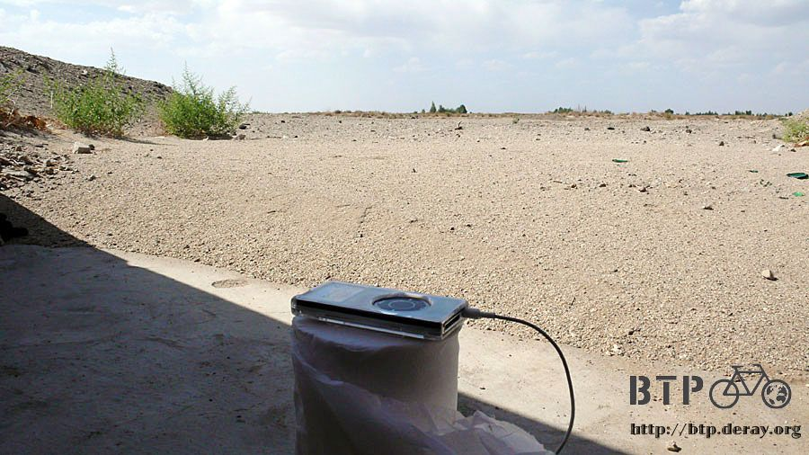

Night Bike Ride to Dunhuang
It had cooled down by the time I was going to bed.
I kept my sleeping bag unzipped and used it as a comforter to stay cooler.
With no light pollution, the sky was amazingly full of stars. It seemed the sky could not hold them all.
The moon was half and shone like a flash light. Even late at night, I could still see my surroundings.
The temperature dropped suddenly at around 2 or 3 o’clock in the morning.
It was probably below 10 degree Celsius. I “mummy” up the sleeping bag after being awakened by the cold.
10 degree Celsius was nothing as my sleeping bag from Albula was designed to hold warmth down to minus 40 degree Celsius.
I went back to sleep without worry and enjoyed this rare camping opportunity.
I got up before 6 o’clock in the early morning. It was freezing cold and I shivered since I was just in my shorts and T-shirt.
I put on my jacket, grabbed my towel, went to the lake, and washed up.
My hands froze in the lake water,turning shades of red and purple.
The cold water definitely got rid of my drowsiness completely.
The east sky had the color of orange. The sun rose at around 6:15am from the horizon to warm up the world.
Packing up my camping equipment without haste - my tent, sleeping bag, and sleeping mat were indispensable.
The tent protected me from wind, annoying insect pests, the sleeping bag kept me warm
and the sleeping mat gave me a sound sleep on a smooth surface.
Kudos to the camping equipment, I could have been tortured by both the cold
and the bugs if I slept in the open air without them.
Next time, if I was in a good mood, I would shop at the market and cook for myself.
My cookware was the only gear that had not been used yet.
I found a few loose spokes when unlocking Dido by surprise.
They had lost their tension like rubber bands and could not protect the wheels any more.
Uniform spoke tension was the key to a strong and long lasting wheel. However,
checking spoke tension was left out of my daily routine. I only checked tire pressure and bolts.
Tightening up the spokes right away, I was not sure how long the spokes had been loose. One spoke had popped out already.
The spokes were found loose purely by accident.
If it was not for the camping and Dido needing to be locked, I would not have touched the spoke.
If I rode with loose spokes, the wheel could be totally damaged. I felt blessed.
After reloading Dido, I walked it back to the highway from the small gravel hill,
stretched a bit and continued the uncompleted journey towards Anxi.
The early morning ride was great. The head wind was gone and it was a nice day with no wind.
Later, I saw the flags along the roadside (the flags with various colors at the construction site served as the road work signs) flying in the wind.
Then I realized that the wind was with me.
I had a tailwind instead. It pushed me forward quietly and I was just not aware of it.
When against the wind, we were very sensitive to the wind speed, even if it was a gentle breeze.
On the contrary, we might ignore a tailwind, even if it was strong.
We took many things for granted until we lose them and regret it.
How to manage our lives could be inspired by the wind.
Never mind about the bad things people had done to you, but be thankful for the good things.
Kudos to the tailwind, no matter that it was flat road, downhill or uphill,my speed was always above 35 km/h.
Compared with yesterday’s turtle speed (between 8 and 10 km/h), I was flying!
It was about 50 km from Shuangta to Anxi, usually a 4 hour bike ride. Today, it only took me two hours to get to Anxi.
I got off the highway at Guazhou county where was not far from Anxi.
At 9:30 in the morning, I arrived at my destination and was ready to call it a day.
I felt unexpectedly relaxed. No doubt about it, I had arrived!
I found a restaurant and was ready to enjoy a big meal.
Lunch: A large wonton soup followed by large shaozi noodles!
I ate like a horse!
“How can he eat so much?” asked a little girl next door.
Kiddo, my stomach has no limit most of time, especially in front of good food.
Since I arrived early, I killed time in an Internet café.
The store owner was nice and let me connect my own computer to the network.
While I was happily updating the Google Earth track, the owner watched me with great interest.
However, with him beside me, I could not work on my own stuff….
I installed Google Earth in his computer so he left me alone and started playing with the new software.
Then, I began to update my website and wrote emails.
The store owner did not charge me for the online fee after I installed Google Earth for him.
I only paid 2 RMB for the first hour when I entered the cafe.
I spent five good hours in the Internet café, from 10:00 am to 3:00pm when the sun was fierce during the day.
When everything was done, it was time to look for a hotel.
I said good bye to the store owner, and thanked for his generosity,
Tomorrow’s destination of Dunhuang was 120 km away from Anxi.
Moreover, there would be a 100 km uninhabited area along Mt. Huoyanshan (The Flaming Mountains).
In order to offset tomorrow’s long ride, I headed further south for another 10 km or so from Anxi.
I would like to find accommodation for tonight before entering Mt. Huoyanshan.
The last village before entering the deserted area was Wangjiazhuang,
where I saw restaurants and stores, but found no hotels.
The ice pop stand that I had not seen for a while appeared again.
I bought four green bean ice pops at first. While I was eating the ice pop to cool off, I asked the stand owner for information.
“Does Wangjiazhuang have hotels?” I asked.
The stand owner shook his head and said “No, you have go back to Anxi.”
Sigh! My plan did not seem to work.
I just got here and had to go back to Anxi for accommodation. My face fell!
“Will there be any place to stay after entering Mt. Huoyanshan?” I asked
The stand owner shook his head again and said
“No, not only is there no place to stay, but also there is no place to eat.”
It would be a non-stop ride for 110 km and all the way to Dunhuang if I entered Mt.
Huoyanshan, since there was no place to eat and stay in the desert.
“It is 4:30 in the afternoon and Dunhuang is 100 km away. I won’t make it today”.
I thought it over while licking the ice pop. It seemed to have two choices.
1. Return to Anxi and have a sound sleep tonight.
Load up on plenty of food and water tomorrow and finish the 120 km ride in one day.
2. Head for Mt. Huoyanshan now,
camp in the desert without supply stations along the way tonight.
Any person who knew me a bit would know I would prefer to do neither.
Why go back? Yet only a lunatic would continue.
After four ice pops, I stocked up on another four but did not stop by any store for supplies.
Forget about food and drink, the ice pop would be good enough.
At 5:00pm, I rode through the toll booth. Dunhuang was 95 km away.
I could either camp, or ride at night and arrive in Dunhuang around 11:00pm.
Route 313 that led me to Dunhuang was in very good condition.
Dunhuang would be at the end of the long stretch of road.
Wow! The road in Mt. Huoyanshan was flat so I did not need to climb up and down.
In the fierce sun, I listened to the iPod, riding against the wind toward Dunhuang.
Guess what? After eight ice pops, my stomach was not happy. I had to “handle” it in desert.

There were more clouds in the sky than yesterday, and they were able to block the sun and cool off the heat quite a bit.
The roadside milestones showed that I was slowly moving at the speed of 1 km every four minutes.

I rode slowly till 9:00pm when the sun had disappeared below the horizon.
What had left was the orange sky as this morning.
I was up before sunrise this morning, and I was still on the road after sunset.
I waved to the sun, see you tomorrow.
By the time I changed my sunglasses and took off my cap, the GPS indicator had started blinking -> low-battery warning.
No wonder! It had been on for more than 15 hours!
I turned on the rear flashing bike light and the Luxeon bike headlight,
finished half bottle of water, inhaled, took a deep breath, and got ready for the night ride.
“I won’t make it to DunHuang tonight?”“I won’t make it to Dunhuang today?”
When I spat it out this afternoon, it had been bothering me ever since. Why would I limit myself?
Even though the sun had gone down, today was not over yet.
If I could get in Dunhuang before midnight, I still made it to Dunhuang TODAY.
My Luxeon bike headlight is a dynamo powered headlight.
As long as I peddle, I have light. However, the drag from the dynamo makes peddling harder.
I was happy with the brightness of the light. With the headlight and the rear light on Dido looked like a motorcycle.
I slowly moved towards Dunhuang. Calm night in the desert, I could vividly hear the contact noise of the bike.
Even thought it was a desert, there were bugs making noise.
How could they survive in such an environment?
Before getting into Dunhuang, I passed by Dunhuang airport.
The blinking lights of airplanes in the air at night were lovely.
After passing the airport, people started showing up. I had a sports drink to refresh me at a store which stayed open at 10:30pm.
My legs felt sluggish. Even so I could still walk and ride. Dunhuang was 8km away, the last half an hour ride for today.
No street lights at night, the passing taxis from the airport lit the road up occasionally, but it was dark again afterward.
The city lights off in the distance became brighter at night. It must be Dunhuang, 5 km away.
My tiredness made me feel that the lights were moving away from me when I rode towards them.
At last, I arrived. The flashing neon lights told me that Dunhuang was a city never slept.
The first thing after riding into the city was to find me a hotel.
No shower for 3 days, so I wanted a hotel with a hot shower.
It was not hard to find such a hotel, enough money can buy it.
It depended on how much I would like to pay for a hot shower.
“XinHua Guest House - 24 hour hot water”.
I propped Dido, then asked the price.
Standard room: two beds, TV, private toilet and sink, shared hot shower, 50 RMB per night
The room rate was reduced to 30 RMB per night for three nights after a successful haggle.
I lifted Dido up to the fourth floor, unloaded the bags, washed up, and went down to the front desk asking for a place to eat.
This city did not let me down. The bustling “Dunhuang Night Market” was just kitty-cornered from the hotel.
The market was full of music, the smell of food, and loud talking.
Tables were in the center of the open air night market surrounded by food stalls.
Soon after taking a seat, a waitress in white shirt and black pants showed up.
She first brought me a plate of melon seeds, asked anything to drink, then gave me the menu.
No matter what you wanted, she would place the orders with different food stalls and wait on my table. It felt great to be served.
I ordered a large wonton soup, spicy shredded pig ears, one kg of Gobi BBQ and two bottles of ice cold Huang He beers.
The Huang He beers were made in Lanzhou.
Lanzhou was 1,000 km away. It was great to taste the beer in Dunhuang, the memorable flavor.
While listening to the music and enjoying the food and drink,
I wanted to tell the Deray who was licking an ice pop in the afternoon that
“I can definitely make it to Dunhuang TODAY!”